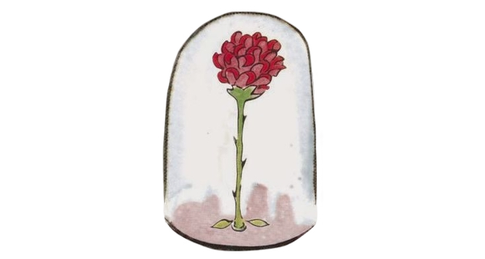

The Rose
The rose/flower represents a stereotypical view of women, for she is fickle, flighty, self-absorbed, flirtatious, and contradictory. Though he loves her, the prince is easily annoyed with her; he comes to believe she is vulnerable and needs him.
